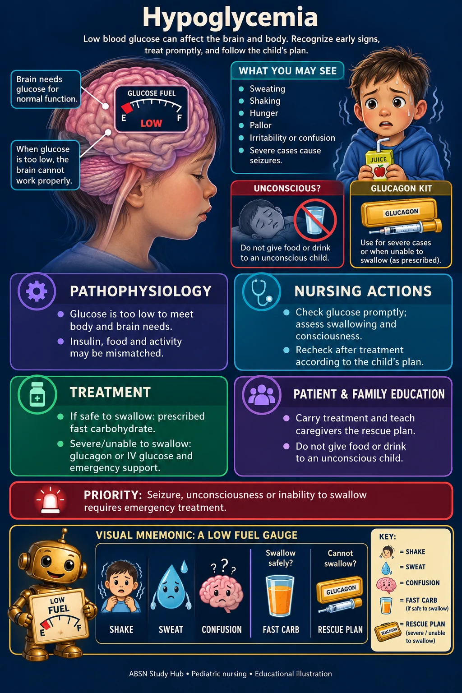

🧬 Endocrine & metabolic · NUR 235 · Module 11
Hypoglycemia
Sweating, shaking, hunger, pallor, irritability or confusion; severe cases cause seizures.


Study notes
Seizure, unconsciousness or inability to swallow requires emergency treatment.
⚙ Pathophysiology
- Glucose is too low to meet body and brain needs; insulin, food and activity may be mismatched.
🩺 Nursing actions
- Check glucose promptly; assess swallowing and consciousness.
- Recheck after treatment according to the child’s plan.
💊 Treatment
- If safe to swallow: prescribed fast carbohydrate.
- Severe/unable to swallow: glucagon or IV glucose and emergency support.
🏠 Patient & family education
- Carry treatment and teach caregivers the rescue plan.
- Do not give food or drink to an unconscious child.
🗝 Visual mnemonic key
A low FUEL gauge: SHAKE, SWEAT, CONFUSION. Swallow safely? FAST CARB; cannot? RESCUE PLAN.
The cartoon objects are memory symbols. The labeled anatomy beside them is the medical illustration.
Where this fits in the course
Based on the supplied course maps and case-study topics. This concise visual companion adds original illustrations and memory aids; the original teaching files remain available.
Supplemental references for this system
- HRSA: Newborn screening conditions
- RCH: Pediatric DKA
- ATA: Hyperthyroidism in children
- RCH: Diabetes insipidus
Illustrations show typical features, not every possible presentation. Medication and procedure decisions follow the individual clinical plan. Original mnemonics are not affiliated with Picmonic.